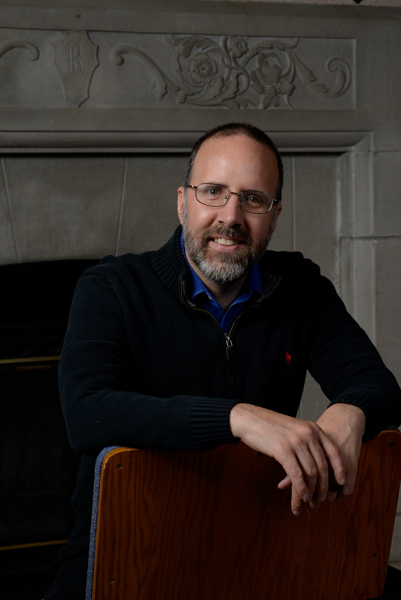

Samuel Robinson
Teaches Train Your Mind: Meditation Foundations, leads A Day of Deep Peace, and keeps an open office every Tuesday for anyone curious about the Hermitage.
Justin is the foundation, and the building goes on. These are the people teaching now: some formed by him directly, some newly arrived, all building on what he began.

Teaches Train Your Mind: Meditation Foundations, leads A Day of Deep Peace, and keeps an open office every Tuesday for anyone curious about the Hermitage.

A mentor and life transition coach in Indianapolis. bio to come
A Silva Method graduate and a meditation guide at the Hermitage.
Friar Justin taught for more than forty years and trained others to teach. The Hermitage’s future is that lineage, widening: new programs, new voices, the same quiet center.
Guest teachers bring workshops and talks into the Explore stage of the path. If you have something to offer the community, we’d like to hear from you.